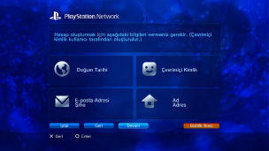

PlayStation™Network > Kaydolma
Kaydolma
Bu özelliği kullanmak için, sistem yazılımını güncellemeniz gerekebilir.
 (PlayStation®Store) öğesine gidilerek,
(PlayStation®Store) öğesine gidilerek,  (Arkadaşlar) altındaki sohbete katılım ile veya PSNSM içindeki çeşitli çevrimiçi hizmetler kullanılarak çevrimiçi alışveriş için kullanılan PSNSM çevrimiçi hizmettir. PSNSM öğesini kullanmak için bir Sony Entertainment Network hesabınızın olması gerekir. Bir hesap oluşturmak için,
(Arkadaşlar) altındaki sohbete katılım ile veya PSNSM içindeki çeşitli çevrimiçi hizmetler kullanılarak çevrimiçi alışveriş için kullanılan PSNSM çevrimiçi hizmettir. PSNSM öğesini kullanmak için bir Sony Entertainment Network hesabınızın olması gerekir. Bir hesap oluşturmak için,  (PlayStation™Network) altındaki
(PlayStation™Network) altındaki  (Kaydol) öğesini seçin ve sonra ekran yönergelerini izleyin.
(Kaydol) öğesini seçin ve sonra ekran yönergelerini izleyin.

Bir hesap oluşturmak için gereken ana öğeler
| Kişisel bilgi | Kayıtlı kullanıcının doğum günü, ayı ve yılı dahil bilgilerini ve kullanıcı adı ve adresini girin. |
|---|---|
| Ana hesap / alt hesap | İki tür hesap vardır: ana hesaplar ve alt hesaplar. Ana hesap sahipleri, ilişkili alt hesaplarda bazı kullanım koşullarını ayarlayabilirler. Ana Hesap: Standart hesap, belirtilen yaşta veya daha yaşlı kayıtlı bir kullanıcı tarafından oluşturulabilir. Ana hesap sahipleri, ilişkili alt hesaplarda bazı kullanım koşullarını ayarlayabilirler. Alt Hesap: Bölgelerinde ana hesap için uygunluk şartlarını karşılamayan kullanıcılar yalnızca alt hesap kullanabilirler. Alt hesap sahipleri cüzdanlar oluşturamazlar, ancak ürün ve hizmetleri ödemek için ilişkili ana hesabın cüzdanını kullanabilirler. İlişkili ana hesap yoksa bir alt hesap oluşturulamaz. Ana hesapların ve alt hesapların uygunluk şartları, bulunduğunuz ülkeye ve bölgeye bağlı olarak değişiklik gösterir. Ayrıntılı bilgi için bölgenize ait SIE Web sitesini ziyaret edin. |
| Giriş Kimliği (E-posta Adresi) | PSNSM oturumu açarken kullanılacak bir kimlik kaydedin. (PlayStation®Store) altında satın alma işlemi yapma gibi durumlarda onay mesajları almak için kullanabilen geçerli bir e-posta adresi kullanın. |
| Şifre |
Aşağıdakine göre bir parola oluşturun:
|
| Çevrimiçi Kimlik |
PSNSM içinde herkese görüntülenecek bir ad kaydedin. Oluşturduktan sonra çevrimiçi kimliğinizi değiştiremezsiniz. Çevrimiçi kimliğinizi şuna göre oluşturun:
|
İpuçları
- Alt hesap oluşturmak için aşağıdaki web sitesini ziyaret edin:
https://www.playstation.com/acct/family - Küçüğün yaşına bağlı olarak, alt hesap oluşturmak için bir PC gerekir. Hesap oluşturma işlemi sırasında, ana hesap sahibinin oturum açma kimliğiyle ilişkili bir e-posta e-posta adresine gönderilir. PC'de kaydı tamamlamak için e-postadaki yönergeleri izleyin.
- Oluşturulan alt hesap kullanılarak PSNSM oturumu açmak için, hesabı PS3™ sisteminde oturum açan bir Kullanıcı ile ilişkilendirmeniz gerekir. Bu kılavuzdaki (PlayStation™Network) altında [Varolan bir hesabı kullanma] konusuna bakın.
- Oturum açma kimliğiniz (e-posta adresi) ve parola herkese görüntülenmez. Bu bilgileri başkalarıyla paylaşmamaya dikkat edin.
- PS3™ sistemindeki bir Kullanıcı için yalnızca bir hesap oluşturabilirsiniz. Ek hesaplar oluşturmak için,
 (Kullanıcılar) öğesine gidin ve ek Kullanıcılar oluşturun.
(Kullanıcılar) öğesine gidin ve ek Kullanıcılar oluşturun. - Kullanıcılarla ilgili kişisel bilgileri işleme hakkında ayrıntılar için, bölgenize ait SIE Web sitesini ziyaret edin.
- PSNSM erişimi geniş bantlı Internet hizmeti gerektirir. Çevirmeli bağlantının desteklenmediğini unutmayın.
- PSNSM, yalnızca bazı bölgelerde ve dillerde kullanılabilir. Ayrıntılar için, bölgeniz için olan teknik destek hattına başvurun.
- (Kaydol), yalnızca bir hesap oluşturulmuşsa görüntülenir.